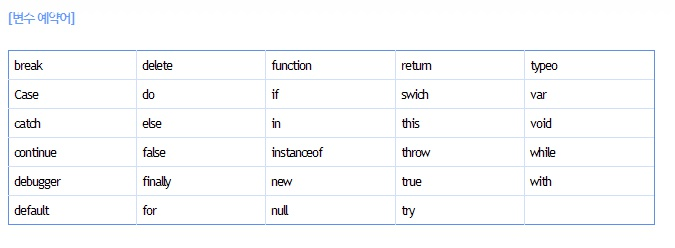

03javascript_variable(변수)
변수(variable)란? 변하는 데이터를 지정하기 위한 일종의 메모리 공간이다.
변수에 대입된 값은 항상 마지막에 저장된 값이 출력된다.
1. 변수의 종류
1)전역변수 : 문서전체에 영향을 주는 변수
2)지역변수 : 함수(function)내에서 선언되어 사용되는 변수로서 그 함수 지역에서만 영향력을 가지는 변수(지역화폐개념)
2. 변수의 선언
변수 선언시 'var','let','const' 키워드를 변수명 앞에 붙여주어 선언한다
자바스크립트 최신버전 es6에서는 'let','const' 사용을 추천한다
var 변수명; 또는 var 변수명 = 값;
3.변수명 작성시 주의사항
변수명을 작성하고자 할 때 아래 사항을 주의해야한다.
- 변수명은 반드시 영문 대,소문자로 작성되어야 한다. 예0 Aa01, aA01
- 변수의 첫글자는 숫자, 기호가 올수 없다. 예)01A, 01_Aa
- 변수명 사이에는 스페이스(공백)을 사용할 수 없다. 예)count 01
- 변수명은 색상이 변하는 단어(예약어)는 사용할 수 없다. 예)var if, break등 이미지 참고
- 변수명에는 특수기호를 사용할 수 없다, (단, $와'_'는 사용가능) 예)$Aa,_Aa
- 변수명은 의미를 담을 수 있는 이름으로 지정하고, 일명 낙타봉(카멜표기법)표기법으로 작성할 것을 권장한다. 예)imagename(x), imageName(O)

4. 여러개의 단어를 조합하여 이름짓는 표기법 4가지
- dash-case : 주로 html,css에서 '-'기호로 단어와 단어 사이에 작성. 클래스명, 아이디명
- snake_case : 주로 html,css에서 '_'기호로 단어와 단어 사이에 작성. 클래스명,아이디명
- camelCase : 주로 javascript에서 사용하며 단어의 첫글자는 소문자 중간에 대문자로 작성하는 것이 특징, 낙타의 등처럼 생겼다고 하여 '카멜표기법'이라고 함
- pascalCaes : 카멜표기법과 유사하지만 첫번째 단어도 대문자로 표시하는 것이 차이점 .js 생성자 함수 사용시 사용함.